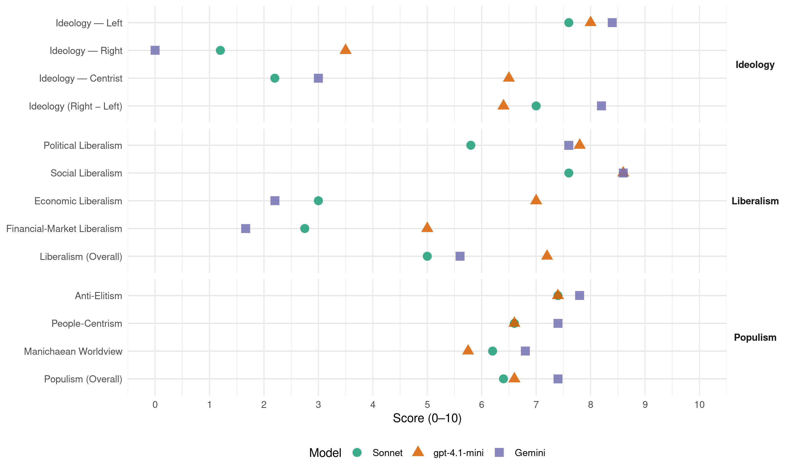

(Japan, 2021)
manifesto_id 71210_202110
Get full text: This site shows derived annotations and short verbatim quotes only. The full manifesto text is © Manifesto Project / WZB — obtain it via manifesto-project.wzb.eu using the manifesto_id above.
Headline scores
| Dimension | Sonnet | gpt-4.1-mini | Gemini |
|---|---|---|---|
| Populism (Overall) | 6.4 | 6.6 | 7.4 |
| Anti-Elitism | 7.4 | 7.4 | 7.8 |
| People-Centrism | 6.6 | 6.6 | 7.4 |
| Manichaean Worldview | 6.2 | 5.8 | 6.8 |
| Ideology (Right − Left) | 7.0 | 6.4 | 8.2 |
| Liberalism (Overall) | 5.0 | 7.2 | 5.6 |
| Political Liberalism | 5.8 | 7.8 | 7.6 |
| Social Liberalism | 7.6 | 8.6 | 8.6 |
| Economic Liberalism | 3.0 | 7.0 | 2.2 |
| Financial-Market Liberalism | 2.8 | 5.0 | 1.7 |
Evidence per dimension
Economic Liberalism
Gemini · score 2.0 · verified · chunk 1
“派遣法を見直し、長時間労働の規制を行います”
経団連の「雇用の流動化」という名の規制緩和をストップ、派遣法を見直し、長時間労働の規制を行います
Gemini · score 2.0 · verified · chunk 2
“自由貿易主義の弊害を取り除き”
農林水産業に対して、自由貿易主義の弊害を取り除き、経営の支援を行います
Gemini · score 2.0 · verified · chunk 3
“最低賃金を全国一律1500円に”
５ 最低賃金を全国一律1500円に！中小企業は徹底支援つきで 今の最低賃金では、まともに暮らしていけない
Gemini · score 2.0 · verified · chunk 4
“行き過ぎた関税撤廃が行われてしまった”
そのため、行き過ぎた関税撤廃が行われてしまったことに鑑み、FTA締結国と関税などの条件の再交渉を行う
Gemini · score 3.0 · verified · chunk 5
“制裁関税を課すなどの対処を行います”
その場合には制裁関税を課すなどの対処を行います 我が国が他国と抱える外交上の諸問題
gpt-4.1-mini · score 8.0 · verified · chunk 1
“消費税の廃止（毎日を10％OFFに） 消費税は「社会保障の充実」のためではなく、法人税収の減収分の補填に回されてきました”
まずは、あなたの所得を増やし、あなたの負担を減らすことが必要です あなたが安心して生活ができることによって社会にお金が回り、需要が増えることで経済を回復させます 財源はどうするのか心配する必要はありません 日本には力があります 日本円を発行するという通貨発行権を、一定の物価上昇率（例えば5年平均で2～3％）まで活用し、必要な施策を徹底的に打ちます 経済回復後も必要な財源は、超富裕層に応分の負担を求め、税制改革で確保します 詳細は「01_れいわ財政・税制・金融政策」を参照 消費税の廃止（毎日を10％OFFに） 消費税は「社会保障の充実」のためではなく、法人税収の減収分の補填に回されてきました 消費が冷え込んでいる中で、消費に対して課税をすることは論外です また、消費税は所得が低いほど負担率（所得に対する負担割合）が高いため、消費税を廃止することは生活保障に直結します 消費税廃止は中小零細事業者にも大きなメリットがあります
gpt-4.1-mini · score 7.0 · verified · chunk 2
“日本の廃炉技術と自然エネルギー技術を世界最先端にしよう”
日本が持つ財政の力を活用し、デフレ脱却を実現させ、産業空洞化を防ごう 日本の廃炉技術と自然エネルギー技術を世界最先端にしよう 光熱費の安い快適な住まいと防災インフラで、すべての人々の命を守ろう 医療・介護・保育を充実させ、そこで働く人々の暮らしも向上させよう こうして、誰も取り残されることのない「共存のための強靱な経済」つくろう
gpt-4.1-mini · score 6.0 · verified · chunk 3
“中小企業の淘汰や、雇用の流動化に反対します”
私たちは、中小企業（個人企業も含む、以下同様）の淘汰や、雇用の流動化に反対します 菅政権では、コロナ禍をチャンスにしてまで、「新陳代謝の促進」と称し淘汰を進めてきました
gpt-4.1-mini · score 7.0 · verified · chunk 4
“農業者に対する直接支払いを行うようにします”
農産物の「目標価格」を市場価格が下回った場合には差額を政府が補填する仕組みなどを拡充し、現在行われている「収入減少影響緩和交付金」や「野菜価格安定制度」などの既存の施策を上回る農業者に対する直接支払いを行うようにします
gpt-4.1-mini · score 7.0 · verified · chunk 5
“通商協定なども相手国の労働者の人権や労働環境などに配慮した条項にアップデート”
通商協定なども相手国の労働者の人権や労働環境などに配慮した条項にアップデートする再交渉を行います 同時に、労働運動の抑圧や児童労働などの人権抑圧下で生産された競争力ある製品が輸入されてきたとき、それに対抗するためにダンピングや価格競争が強いられるという事態は非常に現実的にあり得ることから、その場合には制裁関税を課すなどの対処を行います
Sonnet · score 2.0 · verified · chunk 1
“消費税は廃止し”
消費税は廃止し、同時に消費税を導入して以降に引き下げられてきた法人税を、もとに戻し、さらに累進課税を導入する
Sonnet · score 3.0 · verified · chunk 2
“行き過ぎた自由貿易主義による誤った政策”
TPP や RCEP への加入など、行き過ぎた自由貿易主義による誤った政策によって、すでに経済面での危機にさらされていた
Sonnet · score 3.0 · verified · chunk 3
“雇用の流動化と規制緩和をストップ”
働く人を徹底的に守る 雇用の流動化と規制緩和をストップ これまで、不安定な雇用ばかり増やす政策が続けられてきました
Sonnet · score 3.0 · verified · chunk 4
“行き過ぎた自由貿易協定の見直し”
7.行き過ぎた自由貿易協定の見直し これまで度重なる自由貿易交渉によって、自動車などの工業品の輸出増を勝ち取るために農業が犠牲になってきました
Sonnet · score 4.0 · verified · chunk 5
“自由貿易協定（再交渉を目指す）”
消費税法、自由貿易協定（再交渉を目指す）、大深度地下法（リニア建設や外環道の見直し）
Financial-Market Liberalism
Gemini · score 1.0 · verified · chunk 1
“郵政事業を再公営化”
地域に根ざした金融インフラのネットワークを提供する郵政事業を再公営化 当面の対策として、郵政株の売却は停止
Gemini · score 2.0 · verified · chunk 2
“政府が買い上げて廃炉を進めてゆく”
原発は即時禁止！政府が買い上げて廃炉を進めてゆく。原子力発電所や関連施設は即時に使用を禁止するとともに
Gemini · score 2.0 · verified · chunk 4
“地方銀行の合併・再編を進めたり”
菅政権によって立法化された、地方銀行の合併・再編を進めたり、地方の中小企業を銀行が傘下に置けるようにしたりする仕組みは廃止して元に戻し
gpt-4.1-mini · score 7.0 · verified · chunk 1
“郵政事業の再公営化 地域に根ざした金融インフラのネットワークを提供する郵政事業を再公営化”
郵政事業の再公営化 地域に根ざした金融インフラのネットワークを提供する郵政事業を再公営化 当面の対策として、郵政株※の売却は停止し、郵政３事業に公的関与を継続します
gpt-4.1-mini · score 6.0 · verified · chunk 2
“通貨発行権を有する日本政府が財政破綻することはない”
通貨発行権を有する日本政府が財政破綻することはない 健全財政の要件は適度な物価上昇の維持と、公平性である 日本が持つ財政の力を活用し、デフレ脱却を実現させ、産業空洞化を防ぎ、新たな内需型社会を作ろう
gpt-4.1-mini · score 5.0 · verified · chunk 3
“年金積立金の運用について、国内外株式の割合を増やした”
年金積立金の活用についてはその運用について、国内外株式の割合を増やした安倍政権のやり方を改め、リスクの低い債券（主に国債）の割合を増やします
gpt-4.1-mini · score 5.0 · verified · chunk 4
“地方銀行は協同組織的な方向に改革する”
地方銀行は協同組織的な方向に改革する 地方自治体と再公営化した郵政事業とが、政策金融機関と連携しつつ、地方金融機関をバックアップする体制を構築します
gpt-4.1-mini · score 2.0 · verified · chunk 5
“財務省設置法、財政法、消費税法、自由貿易協定（再交渉を目指す）”
（見直し対象となる法律の候補、順不同） 種子法廃止、農業競争力強化支援法、種苗法改正、PFI法、水道法、国家戦略特別区域法、特定複合観光施設区域整備法（IR整備法）、デジタル改革関連法、秘密保護法、共謀罪、重要土地規制法、いわゆる「安保法制」（平和安全法制整備法と国際平和支援法）労働者派遣法、高度プロフェッショナル制度、病床削減法（医療法）健康保険法（後期高齢者自己負担２倍）技能実習法、入管法、財務省設置法、財政法、消費税法、自由貿易協定（再交渉を目指す）、大深度地下法（リニア建設や外環道の見直し）
Sonnet · score 2.0 · verified · chunk 1
“郵政事業の再公営化”
地域に根ざした金融インフラのネットワークを提供する郵政事業を再公営化 当面の対策として、郵政株の売却は停止し
Sonnet · score 3.0 · verified · chunk 2
“国内の金融機関や投資機関が”
国内の金融機関や投資機関が、外国の石炭火力発電所建設に融資・投資することを禁止する
Sonnet · score 3.0 · verified · chunk 3
“国内外株式の割合を増やした安倍政権”
「年金積立金」についてはその運用について、国内外株式の割合を増やした安倍政権のやり方を改め、リスクの低い債券（主に国債）の割合を増やします
Sonnet · score 3.0 · verified · chunk 4
“地方銀行の合併・再編を進めたり”
菅政権によって立法化された、地方銀行の合併・再編を進めたり、地方の中小企業を銀行が傘下に置けるようにしたりする仕組みは廃止して元に戻し、地方金融機関を地方の中小企業を支える公共的役割を持つものと位置付けた制度に改めます
Political Liberalism
Gemini · score 7.0 · verified · chunk 1
“日本銀行は国会の民主的コントロールのもとにおく”
プライマリーバランス目標は有害無益なので破棄する 日本銀行は国会の民主的コントロールのもとにおく 物価安定目標は他の主要国の目標を参考
Gemini · score 7.0 · verified · chunk 2
“国会でしっかりと予算審議を行い”
そこで私たちは、国会でしっかりと予算審議を行い、財政支出の内容、物価動向に与える影響を審議することを前提にして
Gemini · score 8.0 · verified · chunk 3
“国連子どもの権利条約が要請する”
これを実現するために家裁の専門人員の増員を行うとともに、国連子どもの権利条約が要請する「子どもの意見表明権」を保障するため
Gemini · score 8.0 · verified · chunk 4
“本人の権利行使を制限し”
成年後見制度は、本人の権利行使を制限し、家裁が選任した（多くの場合本人にとって見知らぬ）後見人が
Gemini · score 8.0 · verified · chunk 5
“現行憲法の実践と必要な法や制度の整備”
安易な改憲ではなく、現行憲法の実践と必要な法や制度の整備を 自民党は改憲４項目として
gpt-4.1-mini · score 9.0 · verified · chunk 1
“国会でしっかりと予算審議を行い、財政支出の内容、物価動向に与える影響を審議することを前提に”
私たちは、国会でしっかりと予算審議を行い、財政支出の内容、物価動向に与える影響を審議することを前提にして、以下のように条文の修正を提案します
gpt-4.1-mini · score 8.0 · verified · chunk 2
“国会でしっかりと予算審議を行い、財政支出の内容、物価動向に与える影響を審議することを前提にして”
そこで私たちは、国会でしっかりと予算審議を行い、財政支出の内容、物価動向に与える影響を審議することを前提にして、以下のように条文の修正を提案します （修正案）「国の歳出は、公債又は借入金以外の歳入を以て、その財源としなければならない 但し、国会の議決を経た金額の範囲内で、公債を発行し又は借入金をなすことができる （※建設国債ではなく公債とした）」要するに、国の歳出は、税収等のほか公債や借入金を含む財源をもって行う 国会は経済発展と物価および通貨の安定の目的に沿って予算を決定する、ということです
gpt-4.1-mini · score 7.0 · verified · chunk 3
“国会における立法スタッフを充実する”
大学院を卒業したポスドクの方々については、国会における立法スタッフを充実する際に、専門性を持った調査員として積極的に常勤の公務員として雇用します
gpt-4.1-mini · score 7.0 · verified · chunk 4
“日本国憲法において保障されている基本的人権”
日本国憲法において保障されている基本的人権は我が国だけにとどまることはなく、世界中で保障されるべき人権であるという基本的認識のもと、日本国内で許されない人権侵害については他国においても許されないという認識にたった上で、軍事力に頼らない形での「人権外交政策」を展開していきます
gpt-4.1-mini · score 8.0 · verified · chunk 5
“日本国憲法において保障されている基本的人権”
日本国憲法において保障されている基本的人権は我が国だけにとどまることはなく、世界中で保障されるべき人権であるという基本的認識のもと、日本国内で許されない人権侵害については他国においても許されないという認識にたった上で、軍事力に頼らない形での「人権外交政策」を展開していきます
Sonnet · score 4.0 · verified · chunk 1
“日本銀行は国会の民主的コントロールのもとにおく”
日本銀行は国会の民主的コントロールのもとにおく 物価安定目標は他の主要国の目標を参考にして国会で定める
Sonnet · score 6.0 · verified · chunk 2
“国会でしっかりと予算審議を行い”
国会でしっかりと予算審議を行い、財政支出の内容、物価動向に与える影響を審議することを前提にして
Sonnet · score 6.0 · verified · chunk 3
“保護基準額が恣意的に決められないよう”
保護基準額が恣意的に決められないよう、その決定プロセスを透明化し、民主的コントロールを導入するために国会の議決で行うことにします
Sonnet · score 6.0 · verified · chunk 4
“違憲な2015年安保法制についてはもとに戻します”
違憲な2015年安保法制についてはもとに戻します 日本国憲法上、公使することができない集団的自衛権の行使を盛り込んだ2015年の安保法制による一連の法改正については白紙撤回します
Sonnet · score 7.0 · verified · chunk 5
“公文書管理のあり方を根本的に見直します”
公文書管理のあり方を根本的に見直します 安倍政権で発覚した国の根幹を揺るがす杜撰な「公文書管理」について徹底的に見直し
Liberalism (Overall)
Gemini · score 5.0 · verified · chunk 1
“ジェンダー平等をはじめ、あらゆる差別のない社会”
自己責任でその人のせいにする丸投げの社会、やめませんか ジェンダー平等をはじめ、あらゆる差別のない社会を実現します
Gemini · score 5.0 · verified · chunk 2
“国会でしっかりと予算審議を行い”
そこで私たちは、国会でしっかりと予算審議を行い、財政支出の内容、物価動向に与える影響を審議することを前提にして
Gemini · score 6.0 · verified · chunk 3
“民族、国籍、性自認などの違いがある”
インクルーシブ教育を推進し、障がいの有無や、民族性、性自認などの違いがあることが、子どもたち相互にとっての利点と思えるような学校づくりをめざす
Gemini · score 5.0 · verified · chunk 4
“いかなる性的指向・性自認でも差別されない”
法的根拠に基づき、いかなる性的指向・性自認でも差別されない社会を実現します 同性婚の合法化と共に
Gemini · score 7.0 · verified · chunk 5
“基本的人権は我が国だけにとどまることはなく”
日本国憲法において保障されている基本的人権は我が国だけにとどまることはなく、世界中で保障されるべき人権であるという基本的認識のもと
gpt-4.1-mini · score 8.0 · verified · chunk 1
“消費税の廃止（毎日を10％OFFに） 消費税は「社会保障の充実」のためではなく、法人税収の減収分の補填に回されてきました”
まずは、あなたの所得を増やし、あなたの負担を減らすことが必要です あなたが安心して生活ができることによって社会にお金が回り、需要が増えることで経済を回復させます 財源はどうするのか心配する必要はありません 日本には力があります 日本円を発行するという通貨発行権を、一定の物価上昇率（例えば5年平均で2～3％）まで活用し、必要な施策を徹底的に打ちます 経済回復後も必要な財源は、超富裕層に応分の負担を求め、税制改革で確保します 詳細は「01_れいわ財政・税制・金融政策」を参照 消費税の廃止（毎日を10％OFFに） 消費税は「社会保障の充実」のためではなく、法人税収の減収分の補填に回されてきました 消費が冷え込んでいる中で、消費に対して課税をすることは論外です また、消費税は所得が低いほど負担率（所得に対する負担割合）が高いため、消費税を廃止することは生活保障に直結します 消費税廃止は中小零細事業者にも大きなメリットがあります
gpt-4.1-mini · score 8.0 · verified · chunk 2
“国会でしっかりと予算審議を行い、財政支出の内容、物価動向に与える影響を審議することを前提にして”
そこで私たちは、国会でしっかりと予算審議を行い、財政支出の内容、物価動向に与える影響を審議することを前提にして、以下のように条文の修正を提案します （修正案）「国の歳出は、公債又は借入金以外の歳入を以て、その財源としなければならない 但し、国会の議決を経た金額の範囲内で、公債を発行し又は借入金をなすことができる （※建設国債ではなく公債とした）」要するに、国の歳出は、税収等のほか公債や借入金を含む財源をもって行う 国会は経済発展と物価および通貨の安定の目的に沿って予算を決定する、ということです
gpt-4.1-mini · score 7.0 · verified · chunk 3
“国会における立法スタッフを充実する”
大学院を卒業したポスドクの方々については、国会における立法スタッフを充実する際に、専門性を持った調査員として積極的に常勤の公務員として雇用します
gpt-4.1-mini · score 7.0 · verified · chunk 4
“日本国憲法において保障されている基本的人権”
日本国憲法において保障されている基本的人権は我が国だけにとどまることはなく、世界中で保障されるべき人権であるという基本的認識のもと、日本国内で許されない人権侵害については他国においても許されないという認識にたった上で、軍事力に頼らない形での「人権外交政策」を展開していきます
gpt-4.1-mini · score 6.0 · verified · chunk 5
“日本国憲法において保障されている基本的人権”
日本国憲法において保障されている基本的人権は我が国だけにとどまることはなく、世界中で保障されるべき人権であるという基本的認識のもと、日本国内で許されない人権侵害については他国においても許されないという認識にたった上で、軍事力に頼らない形での「人権外交政策」を展開していきます
Sonnet · score 4.0 · verified · chunk 1
“新自由主義的政策によって公的サービスが削られた”
新自由主義的政策によって公的サービスが削られた結果、格差と貧困は悪化しています
Sonnet · score 5.0 · verified · chunk 2
“透明性を高め、被害者を誰も取り残さない”
原発廃止後はこの機構を改組し、より透明性を高め、被害者を誰も取り残さない形で、東電と国の責任で賠償を行う仕組みを構築する
Sonnet · score 5.0 · mixed · chunk 3
“民族性、性自認などの違いがあること”
インクルーシブ教育を推進し、障がいの有無や、民族性、性自認などの違いがあることが、子どもたち相互にとっての利点と思えるような学校づくりをめざす
Sonnet · score 5.0 · verified · chunk 4
“LGBTQ+差別解消」を目的にする法律”
国際的な人権基準に基づいた「LGBTQ+差別解消」を目的にする法律（※xviii）を速やかに法制化します 法的根拠に基づき、いかなる性的指向・性自認でも差別されない社会を実現します
Sonnet · score 6.0 · verified · chunk 5
“基本的人権は我が国だけにとどまることはなく”
日本国憲法において保障されている基本的人権は我が国だけにとどまることはなく、世界中で保障されるべき人権であるという基本的認識のもと
Anti-Elitism
Gemini · score 8.0 · verified · chunk 1
“上級国民と言われる者のための経済ではない”
私たちが目指すのは 上級国民と言われる者のための経済ではない あなたが生きているだけで価値がある社会
Gemini · score 8.0 · verified · chunk 2
“同じたぐいの政官財の支配者集団である”
原発や石炭火力に固執する勢力は、同じたぐいの政官財の支配者集団である。政治を彼らから、私たちの手に取り戻そう
Gemini · score 8.0 · verified · chunk 3
“経団連などの財界の姿勢に沿った路線”
コロナ禍をチャンスにしてまで、「新陳代謝の促進」と称し淘汰を進めてきました これは、経団連などの財界の姿勢に沿った路線です 少子化によって国内市場が伸びなくなったとして
Gemini · score 7.0 · verified · chunk 4
“経団連などの財界の姿勢に沿った路線”
これは、経団連などの財界の姿勢に沿った路線です 少子化によって国内市場が伸びなくなったとして
Gemini · score 8.0 · verified · chunk 5
“一部の利害関係者のための政治の打破”
公文書改ざんのような事案の再発を阻止 12_一部の利害関係者のための政治の打破を実現する ① 政策決定における
gpt-4.1-mini · score 9.0 · verified · chunk 1
“上級国民と言われる者のための経済ではない”
私たちが目指すのは 上級国民と言われる者のための経済ではない あなたが生きているだけで価値がある社会、誰もがわかちあえる経済繁栄と自然環境が共存する国づくり
gpt-4.1-mini · score 7.0 · verified · chunk 2
“緊縮策（「財政健全化」）と消費税の引き上げ（そして法人税減税）を要求し続けて、この国の経済を弱体化させてきた勢力と、原発や石炭火力に固執する勢力は、同じたぐいの政官財の支配者集団である”
緊縮策（「財政健全化」）と消費税の引き上げ（そして法人税減税）を要求し続けて、この国の経済を弱体化させてきた勢力と、原発や石炭火力に固執する勢力は、同じたぐいの政官財の支配者集団である 政治を彼らから、私たちの手に取り戻そう 地震国日本から、今すぐ原発をなくそう 同時に気候危機にも対処し、自然エネルギー100%の社会を目指そう
gpt-4.1-mini · score 6.0 · verified · chunk 3
“政治によって変えられるものだ”
死にたくなるような世の中は、政治によって変えられるものだ なぜなら、そんな国を作ってきたのは政治だからだ
gpt-4.1-mini · score 7.0 · verified · chunk 4
“経団連などの財界の姿勢に沿った路線です”
菅政権では、コロナ禍をチャンスにしてまで、「新陳代謝の促進」と称し淘汰を進めてきました これは、経団連などの財界の姿勢に沿った路線です 少子化によって国内市場が伸びなくなったとして、国内の需要を見限り、海外に企業進出する路線と連動しています
gpt-4.1-mini · score 8.0 · verified · chunk 5
“一部の利害関係者のための政治の打破を実現する”
12_一部の利害関係者のための政治の打破を実現する ① 政策決定における 「利益誘導の禁止」と「当事者参画の徹底」 ７年以上に渡って続いた、自民党・安倍政権においては、森友・加計学園の問題、桜を見る会の問題など、憲法15条上、
Sonnet · score 9.0 · verified · chunk 1
“上級国民と言われる者のための経済ではない”
私たちが目指すのは 上級国民と言われる者のための経済ではない あなたが生きているだけで価値がある社会
Sonnet · score 8.0 · verified · chunk 2
“政官財の支配者集団である”
消費税の引き上げや緊縮策を求めて来た勢力と、原発や石炭火力に固執する勢力は、同じたぐいの政官財の支配者集団である
Sonnet · score 7.0 · verified · chunk 3
“経団連などの財界の姿勢に沿った路線”
菅政権では、コロナ禍をチャンスにしてまで、「新陳代謝の促進」と称し淘汰を進めてきました これは、経団連などの財界の姿勢に沿った路線です
Sonnet · score 6.0 · verified · chunk 4
“経団連などの財界の姿勢に沿った路線”
菅政権では、コロナ禍をチャンスにしてまで、「新陳代謝の促進」と称し淘汰を進めてきました これは、経団連などの財界の姿勢に沿った路線です
Sonnet · score 7.0 · verified · chunk 5
“自民党・安倍政権においては、森友・加計学園の問題”
７年以上に渡って続いた、自民党・安倍政権においては、森友・加計学園の問題、桜を見る会の問題など、憲法15条上、「全体の奉仕者」であると定められている内閣総理大臣が自分たちの「オトモダチ」のために便宜を図ったと疑われる事件が相次ぎました
Ideology — Centrist
Gemini · score 3.0 · verified · chunk 3
“そんな国をあなたと作りたい”
孤立無縁、天涯孤独、一人ぼっちであっても心配するな 私たちはあなたから手を離さない」 「私たち、れいわ新選組は、そんな国をあなたと作りたい」と書いた
gpt-4.1-mini · score 7.0 · verified · chunk 1
“国会でしっかりと予算審議を行い、財政支出の内容、物価動向に与える影響を審議することを前提に”
私たちは、国会でしっかりと予算審議を行い、財政支出の内容、物価動向に与える影響を審議することを前提にして、以下のように条文の修正を提案します
gpt-4.1-mini · score 7.0 · verified · chunk 3
“私たちはあなたから手を離さない”
孤立無縁、天涯孤独、一人ぼっちであっても心配するな 私たちはあなたから手を離さない 私たち、れいわ新選組は、そんな国をあなたと作りたい
gpt-4.1-mini · score 6.0 · verified · chunk 4
“地域の経済やコミュニティを担い”
かくして、これまで地域の経済やコミュニティを担い、人々の生業の場となってきた中小企業が、もはや立ち行かなくなって一掃され、低賃金非正規雇用と規模を追求した全国チェーン店やグローバル大企業ばかりが生き残る、ますます荒涼とした格差社会になりかねません
gpt-4.1-mini · score 6.0 · verified · chunk 5
“「Nothing about us without us!（私たち抜きに私たちのことを何も決めるな！）」”
当事者参画の徹底を制度化します 具体的には、障害者、高齢者、子ども、生活困窮者、ニート・ひきこもり、LGBT、被災者、外国人等のマイノリティに関する政策決定における審議・検討過程、制度を執行する行政の監視機関等に、当事者を３分の１から半数の割合で参加する仕組みをつくります 「Nothing about us without us!（私たち抜きに私たちのことを何も決めるな！）」というのは、アメリカの障害者の自立生活運動のスローガンとして使われ始めた考え方ですが、私たちは政策立案にあっては当事者が参加する仕組みを作る事が重要だと考えます そこで私たちは以下の通りに制度の見直しと改善を行うべきと考えます
Sonnet · score 2.0 · verified · chunk 1
“あなたが生きているだけで価値がある”
あなたが生きているだけで価値がある社会、誰もがわかちあえる経済繁栄と自然環境が共存する国づくり
Sonnet · score 2.0 · verified · chunk 2
“誰も取り残されることのない”
こうして、誰も取り残されることのない「共存のための強靱な経済」つくろう
Sonnet · score 2.0 · verified · chunk 3
“孤立無縁、天涯孤独、一人ぼっちであっても”
私たちは、れいわニューディール政策の前文で「孤立無縁、天涯孤独、一人ぼっちであっても心配するな 私たちはあなたから手を離さない」
Sonnet · score 2.0 · verified · chunk 4
“誰もがコントロール感ある生業の場を”
07_れいわ中小企業政策 誰もがコントロール感ある生業の場を！ 私たちは、中小企業（個人企業も含む、以下同様）の淘汰や、雇用の流動化に反対します
Sonnet · score 3.0 · verified · chunk 5
“政策決定過程の透明化と行政監視”
政策決定過程の透明化と行政監視における当事者参画の徹底を制度化します
Ideology — Left
Gemini · score 9.0 · verified · chunk 1
“1％のグローバル資本が独占する富を分け合い”
世界の99％の人々と繋がり、1％のグローバル資本が独占する富を分け合い、公平で公正な世界を実現するために
Gemini · score 8.0 · verified · chunk 2
“新自由主義的政策によって公的サービスが削られた”
国内産業の空洞化をもたらした 新自由主義的政策によって公的サービスが削られた結果、格差と貧困は悪化している
Gemini · score 9.0 · verified · chunk 3
“累進性の高い税制度により持続的な制度への抜本改革”
当面は国債発行により危機を乗り越えながら、長期的には累進性の高い税制度により持続的な制度への抜本改革が必要です 以下に当面の改革案を示します
Gemini · score 8.0 · verified · chunk 4
“大資本への統合が目指され”
合併・買収（M&A）などを通じた大資本への統合が目指され、そして、こうした再編をスムーズに進めるために
Gemini · score 8.0 · verified · chunk 5
“安い労働力としての搾取です”
外国人技能実習制度は「あなたの祖国に日本の技術を持って帰って役立ててください」という話でしたが、実際は労働の「調整弁」としての安い労働力としての搾取です
gpt-4.1-mini · score 9.0 · verified · chunk 1
“格差是正、産業の比重の調整や環境保護、過度なインフレの抑制のためである”
私たちも富裕層や大企業への課税を主張するが、それは「財源」のためではなく、格差是正、産業の比重の調整や環境保護、過度なインフレの抑制のためである また、そのような公正な課税に向けては、国内での努力のみならず、世界の99％の人々と繋がって税制ルールを確立していく
gpt-4.1-mini · score 8.0 · verified · chunk 2
“私たちは、あなたの命を守り、そしてあなたの命を受け継ぐ命を守るために、闘うことを約束する”
私たちは、あなたの命を守り、そしてあなたの命を受け継ぐ命を守るために、闘うことを約束する 「経済」と「環境」は対立するものと思われがちであるが、人々の暮らしの改善や雇用の拡大を目指すことと、地球環境を守ることは、何も対立しない むしろ人間の尊厳を守るという目的は一致している
gpt-4.1-mini · score 8.0 · verified · chunk 3
“消費税増税と法人税減税を求めた提言”
消費税増税と法人税減税を求めた提言として、民主党政権時代に出された「成長戦略の実行と財政再建の断行を求める」(2012 年5 月15 日)がある
gpt-4.1-mini · score 8.0 · verified · chunk 4
“労働運動を応援する 障がい者の就業をいっそう促進する”
労働運動を応援する 障がい者の就業をいっそう促進する 日本政府未批准のILO条約111号「雇用及び職業についての差別待遇に関する条約」をただちに批准する
gpt-4.1-mini · score 7.0 · verified · chunk 5
“利益誘導の禁止」と「当事者参画の徹底”
12_一部の利害関係者のための政治の打破を実現する ① 政策決定における 「利益誘導の禁止」と「当事者参画の徹底」 ７年以上に渡って続いた、自民党・安倍政権においては、森友・加計学園の問題、桜を見る会の問題など、憲法15条上、
Sonnet · score 9.0 · verified · chunk 1
“法人税を累進化”
私たちは、税制改革で「法人税を累進化」します 儲かりすぎればその分、税率が上がり
Sonnet · score 8.0 · verified · chunk 2
“新自由主義的政策によって公的サービスが削られた”
新自由主義的政策によって公的サービスが削られた結果、格差と貧困は悪化している
Sonnet · score 8.0 · verified · chunk 3
“同一価値労働同一賃金を実現します”
派遣労働を含む有期労働契約を、既存の就業が失われないよう配慮しつつ原則禁止し、やむを得ない臨時的に認められる条件を法律に明記します そして、同一価値労働同一賃金を実現します
Sonnet · score 7.0 · verified · chunk 4
“同一価値労働同一賃金”
国際労働機関（ILO）が提唱する、「同一価値労働同一賃金」と「ディーセント・ワーク（働きがいのある人間らしい仕事）」を実現する
Sonnet · score 6.0 · verified · chunk 5
“外国人技能実習制度」は廃止します”
人権侵害の「外国人技能実習制度」は廃止します 外国人技能実習制度は「あなたの祖国に日本の技術を持って帰って役立ててください」という話でしたが、実際は労働の「調整弁」としての安い労働力としての搾取です
Ideology (Right − Left)
Gemini · score 9.0 · verified · chunk 1
“1％のグローバル資本が独占する富を分け合い”
世界の99％の人々と繋がり、1％のグローバル資本が独占する富を分け合い、公平で公正な世界を実現するために
Gemini · score 8.0 · verified · chunk 2
“新自由主義的政策によって公的サービスが削られた”
国内産業の空洞化をもたらした 新自由主義的政策によって公的サービスが削られた結果、格差と貧困は悪化している
Gemini · score 8.0 · verified · chunk 3
“累進性の高い税制度により持続的な制度への抜本改革”
当面は国債発行により危機を乗り越えながら、長期的には累進性の高い税制度により持続的な制度への抜本改革が必要です 以下に当面の改革案を示します
Gemini · score 8.0 · verified · chunk 4
“大資本への統合が目指され”
合併・買収（M&A）などを通じた大資本への統合が目指され、そして、こうした再編をスムーズに進めるために
Gemini · score 8.0 · verified · chunk 5
“安い労働力としての搾取です”
外国人技能実習制度は「あなたの祖国に日本の技術を持って帰って役立ててください」という話でしたが、実際は労働の「調整弁」としての安い労働力としての搾取です
gpt-4.1-mini · score 8.0 · verified · chunk 1
“格差是正、産業の比重の調整や環境保護、過度なインフレの抑制のためである”
私たちも富裕層や大企業への課税を主張するが、それは「財源」のためではなく、格差是正、産業の比重の調整や環境保護、過度なインフレの抑制のためである また、そのような公正な課税に向けては、国内での努力のみならず、世界の99％の人々と繋がって税制ルールを確立していく
gpt-4.1-mini · score 6.0 · verified · chunk 2
“緊縮策（「財政健全化」）と消費税の引き上げ（そして法人税減税）を要求し続けて、この国の経済を弱体化させてきた勢力と、原発や石炭火力に固執する勢力は、同じたぐいの政官財の支配者集団である”
緊縮策（「財政健全化」）と消費税の引き上げ（そして法人税減税）を要求し続けて、この国の経済を弱体化させてきた勢力と、原発や石炭火力に固執する勢力は、同じたぐいの政官財の支配者集団である 政治を彼らから、私たちの手に取り戻そう 地震国日本から、今すぐ原発をなくそう 同時に気候危機にも対処し、自然エネルギー100%の社会を目指そう
gpt-4.1-mini · score 7.0 · verified · chunk 3
“政治によって変えられるものだ”
死にたくなるような世の中は、政治によって変えられるものだ なぜなら、そんな国を作ってきたのは政治だからだ
gpt-4.1-mini · score 6.0 · verified · chunk 4
“経団連などの財界の姿勢に沿った路線です”
菅政権では、コロナ禍をチャンスにしてまで、「新陳代謝の促進」と称し淘汰を進めてきました これは、経団連などの財界の姿勢に沿った路線です 少子化によって国内市場が伸びなくなったとして、国内の需要を見限り、海外に企業進出する路線と連動しています
gpt-4.1-mini · score 5.0 · verified · chunk 5
“一部の利害関係者のための政治の打破を実現する”
12_一部の利害関係者のための政治の打破を実現する ① 政策決定における 「利益誘導の禁止」と「当事者参画の徹底」 ７年以上に渡って続いた、自民党・安倍政権においては、森友・加計学園の問題、桜を見る会の問題など、憲法15条上、
Sonnet · score 9.0 · verified · chunk 1
“積極財政で医療体制を強化”
医療政策における緊縮財政の過ちをただし、積極財政で医療体制を強化し、「人命より財政」という考えを払拭
Sonnet · score 8.0 · verified · chunk 2
“格差と貧困は悪化している”
新自由主義的政策によって公的サービスが削られた結果、格差と貧困は悪化している
Sonnet · score 7.0 · verified · chunk 3
“同一価値労働同一賃金を実現します”
派遣労働を含む有期労働契約を、既存の就業が失われないよう配慮しつつ原則禁止し、やむを得ない臨時的に認められる条件を法律に明記します そして、同一価値労働同一賃金を実現します
Sonnet · score 6.0 · verified · chunk 4
“同一価値労働同一賃金”
国際労働機関（ILO）が提唱する、「同一価値労働同一賃金」と「ディーセント・ワーク（働きがいのある人間らしい仕事）」を実現する
Sonnet · score 5.0 · verified · chunk 5
“搾取です 非人間的な扱いも数々報告”
実際は労働の「調整弁」としての安い労働力としての搾取です 非人間的な扱いも数々報告されています
Ideology — Right
Gemini · score 0.0 · verified · chunk 3
“これは、排外主義に与するものではない”
日本人と同じ賃金と労働基準を適用し、「低コストの外国人労働者」の受け入れをなくしていきます これは、排外主義に与するものではないし、そうであってはなりません
Gemini · score 0.0 · verified · chunk 4
“これは、排外主義に与するものではない”
「低コストの外国人労働者」の受け入れをなくしていきます これは、排外主義に与するものではないし、そうであってはなりません
gpt-4.1-mini · score 6.0 · verified · chunk 1
“過度に円高が進展する場合には躊躇なく円安に為替を誘導するための介入を行い”
私達は過度に円高が進展する場合には躊躇なく円安に為替を誘導するための介入を行い、 国内に基盤を持つ輸出産業を支援、 産業空洞化を阻止
gpt-4.1-mini · score 2.0 · verified · chunk 2
“原発や石炭火力に固執する勢力は、同じたぐいの政官財の支配者集団である”
緊縮策（「財政健全化」）と消費税の引き上げ（そして法人税減税）を要求し続けて、この国の経済を弱体化させてきた勢力と、原発や石炭火力に固執する勢力は、同じたぐいの政官財の支配者集団である 政治を彼らから、私たちの手に取り戻そう 地震国日本から、今すぐ原発をなくそう 同時に気候危機にも対処し、自然エネルギー100%の社会を目指そう
gpt-4.1-mini · score 3.0 · verified · chunk 3
“外国人労働者は敵ではない”
外国人労働者は敵ではない 「労働の安売り競争」こそがなくすべき敵である 今、世界中で労働者が競争に追い立てられ、賃金やその他の労働条件をお互いに切り下げる
gpt-4.1-mini · score 3.0 · verified · chunk 4
“外国人労働者は敵ではない 「労働の安売り競争」こそがなくすべき敵である”
10 働く人を徹底的に守る 外国人労働者は敵ではない 「労働の安売り競争」こそがなくすべき敵である 今、世界中で労働者が競争に追い立てられ、賃金やその他の労働条件をお互いに切り下げる「底辺への競争」の現実が存在しています
Sonnet · score 2.0 · verified · chunk 1
“国内産業基盤の強化策”
２．国内産業基盤の強化策 グリーン・ニューディールなどの産業政策による国内産業基盤強化に努めるとともに
Sonnet · score 1.0 · verified · chunk 2
“自由貿易主義の弊害を取り除き”
農林水産業に対して、自由貿易主義の弊害を取り除き、経営の支援を行います
Sonnet · score 1.0 · verified · chunk 3
“排外主義に与するものではない”
これは、排外主義に与するものではないし、そうであってはなりません 積極的な雇用拡大政策とも合わせて
Sonnet · score 1.0 · verified · chunk 4
“排外主義に与するものではない”
これは、排外主義に与するものではないし、そうであってはなりません 積極的な雇用拡大政策とも合わせて、同一価値労働同一賃金の原則を、民族・国籍を問わず全ての労働者に広げ
Sonnet · score 1.0 · verified · chunk 5
“我が国が主権を保有する領土に関する”
我が国が主権を保有する領土に関する他国との意見の相違については、多国間連携のもと国際機関を通じた外交と対話による解決を図ります
Manichaean Worldview
Gemini · score 7.0 · verified · chunk 1
“1％のグローバル資本が独占する富”
世界の99％の人々と繋がり、1％のグローバル資本が独占する富を分け合い、公平で公正な世界を実現する
Gemini · score 7.0 · verified · chunk 2
“あなたを守るために、闘うことを約束する”
私たちは、あなたの命を守り、復興、そしてあなたの命を受け継ぐ命を守るために、闘うことを約束する
Gemini · score 7.0 · verified · chunk 3
“庶民の生活と消費は低迷する地獄”
株価は上昇し、富裕層は資産を大きく増やしていますが、庶民の生活と消費は低迷する地獄が加速しています わたしたちはこうした状況を以下の政策で、逆転させます
Gemini · score 6.0 · verified · chunk 4
“「労働の安売り競争」こそがなくすべき敵”
外国人労働者は敵ではない 「労働の安売り競争」こそがなくすべき敵である 今、世界中で労働者が競争に追い立てられ
Gemini · score 7.0 · verified · chunk 5
“自分たちの「オトモダチ」のために便宜を図った”
全体の奉仕者」であると定められている内閣総理大臣が自分たちの「オトモダチ」のために便宜を図ったと疑われる事件が相次ぎました
gpt-4.1-mini · score 7.0 · verified · chunk 1
“世界の99％の人々と繋がり、1％のグローバル資本が独占する富を分け合い”
強靭で持続可能な経済を誇る日本であり、世界の99％の人々と繋がり、1％のグローバル資本が独占する富を分け合い、公平で公正な世界を実現するために、行動をする日本である
gpt-4.1-mini · score 7.0 · verified · chunk 2
“緊縮策（「財政健全化」）と消費税の引き上げ（そして法人税減税）を要求し続けて、この国の経済を弱体化させてきた勢力と、原発や石炭火力に固執する勢力は、同じたぐいの政官財の支配者集団である”
緊縮策（「財政健全化」）と消費税の引き上げ（そして法人税減税）を要求し続けて、この国の経済を弱体化させてきた勢力と、原発や石炭火力に固執する勢力は、同じたぐいの政官財の支配者集団である 政治を彼らから、私たちの手に取り戻そう 地震国日本から、今すぐ原発をなくそう 同時に気候危機にも対処し、自然エネルギー100%の社会を目指そう
gpt-4.1-mini · score 5.0 · mixed · chunk 3
“死にたくなるような世の中は、政治によって変えられるものだ”
死にたくなるような世の中は、政治によって変えられるものだ なぜなら、そんな国を作ってきたのは政治だからだ だったら、死にたくならないどころか、生きてて良かったって思えるような社会を
gpt-4.1-mini · score 5.0 · verified · chunk 4
“外国人労働者は敵ではない 「労働の安売り競争」こそがなくすべき敵である”
10 働く人を徹底的に守る 外国人労働者は敵ではない 「労働の安売り競争」こそがなくすべき敵である 今、世界中で労働者が競争に追い立てられ、賃金やその他の労働条件をお互いに切り下げる「底辺への競争」の現実が存在しています
gpt-4.1-mini · score 4.0 · verified · chunk 5
“「政商」のような形で、対象事業の選定に関わっていることが、国会質疑でも問題になりました”
国家戦略特区を巡っては、現在、民間の派遣会社のトップの座にある元政府高官がたびたび「政商」のような形で、対象事業の選定に関わっていることが、国会質疑でも問題になりました 一方で重要な政策決定においては、制度変更の影響を受ける当事者からの意見を十分に尊重し、万全に政策に反映させる形になっているとは言えません
Sonnet · score 8.0 · verified · chunk 1
“1％のグローバル資本が独占する富”
世界の99％の人々と繋がり、1％のグローバル資本が独占する富を分け合い、公平で公正な世界を実現するために
Sonnet · score 7.0 · verified · chunk 2
“大企業の支配者集団と政権は”
大企業の支配者集団と政権は、この先、南海トラフ地震や東海地震…3.11大震災の犠牲と教訓を投げ捨て、40年超の老朽原発を再稼働しようとし
Sonnet · score 6.0 · verified · chunk 3
“人命より財政」という考えを払拭”
積極財政で医療体制を強化し、「人命より財政」という考えを払拭し、財政悪化を口実に医療費を削減することなく
Sonnet · score 5.0 · verified · chunk 4
“奴隷的な労働実態”
その人権無視の奴隷的な労働実態から、国連人権理事会では廃止するよう調査報告されています このような奴隷制度が公然と存在していることなどあってはならない
Sonnet · score 5.0 · verified · chunk 5
“一部の利害関係者のための政治の打破”
12_一部の利害関係者のための政治の打破を実現する ① 政策決定における 「利益誘導の禁止」と「当事者参画の徹底」
People-Centrism
Gemini · score 8.0 · verified · chunk 1
“世界の99％の人々と繋がり”
強靭で持続可能な経済を誇る日本であり、世界の99％の人々と繋がり、1％のグローバル資本が独占する富
Gemini · score 8.0 · verified · chunk 2
“政治を彼らから、私たちの手に取り戻す”
経済と環境の問題を解決するためには、政治を彼らから、私たちの手に取り戻すことが不可不可欠である
Gemini · score 7.0 · verified · chunk 3
“私たちはあなたから手を離さない”
れいわニューディール政策の前文で「孤立無縁、天涯孤独、一人ぼっちであっても心配するな 私たちはあなたから手を離さない」 「私たち、れいわ新選組は、そんな国をあなたと作りたい」
Gemini · score 8.0 · verified · chunk 4
“地域経済の主役である中小企業”
中小企業に対する淘汰路線を阻止し、地域経済の主役である中小企業・農林水産業を守らなければなりません
Gemini · score 6.0 · verified · chunk 5
“国民が主権者として政治に主体的に参画”
だれもが選挙に挑戦しやすい環境を作ります 国民が主権者として政治に主体的に参画しやすくします 選挙の供託金の廃止
gpt-4.1-mini · score 8.0 · verified · chunk 1
“あなたには国がついている あなたが困る前にあなたを支える公助がある”
何があっても心配するな あなたには国がついている あなたが困る前にあなたを支える公助がある 孤立無援、天涯孤独、一人ぼっちになっても心配するな
gpt-4.1-mini · score 6.0 · verified · chunk 2
“私たちは、あなたの命を守り、そしてあなたの命を受け継ぐ命を守るために、闘うことを約束する”
私たちは、あなたの命を守り、そしてあなたの命を受け継ぐ命を守るために、闘うことを約束する 「経済」と「環境」は対立するものと思われがちであるが、人々の暮らしの改善や雇用の拡大を目指すことと、地球環境を守ることは、何も対立しない むしろ人間の尊厳を守るという目的は一致している
gpt-4.1-mini · score 7.0 · verified · chunk 3
“私たちはあなたから手を離さない”
孤立無縁、天涯孤独、一人ぼっちであっても心配するな 私たちはあなたから手を離さない 私たち、れいわ新選組は、そんな国をあなたと作りたい
gpt-4.1-mini · score 6.0 · verified · chunk 4
“地域の経済やコミュニティを担い”
かくして、これまで地域の経済やコミュニティを担い、人々の生業の場となってきた中小企業が、もはや立ち行かなくなって一掃され、低賃金非正規雇用と規模を追求した全国チェーン店やグローバル大企業ばかりが生き残る、ますます荒涼とした格差社会になりかねません
gpt-4.1-mini · score 6.0 · verified · chunk 5
“「Nothing about us without us!（私たち抜きに私たちのことを何も決めるな！）」”
当事者参画の徹底を制度化します 具体的には、障害者、高齢者、子ども、生活困窮者、ニート・ひきこもり、LGBT、被災者、外国人等のマイノリティに関する政策決定における審議・検討過程、制度を執行する行政の監視機関等に、当事者を３分の１から半数の割合で参加する仕組みをつくります 「Nothing about us without us!（私たち抜きに私たちのことを何も決めるな！）」というのは、アメリカの障害者の自立生活運動のスローガンとして使われ始めた考え方ですが、私たちは政策立案にあっては当事者が参加する仕組みを作る事が重要だと考えます そこで私たちは以下の通りに制度の見直しと改善を行うべきと考えます
Sonnet · score 9.0 · verified · chunk 1
“あなたには国がついている”
何があっても心配するな あなたには国がついている あなたが困る前にあなたを支える公助がある
Sonnet · score 7.0 · verified · chunk 2
“政治を彼らから、私たちの手に取り戻そう”
経済と環境の問題を解決するためには、政治を彼らから、私たちの手に取り戻すことが不可欠である
Sonnet · score 7.0 · verified · chunk 3
“99%のためのベーシックインカム構想”
参考： 朴勝俊・山森亮・井上智洋(2012)「99%のためのベーシックインカム構想」薔薇マークキャンペーンHP
Sonnet · score 5.0 · verified · chunk 4
“働く人を徹底的に守る”
９ 働く人を徹底的に守る 不本意離職ゼロ 働き続けることが難しい状況は、誰にでも起こり得る
Sonnet · score 5.0 · verified · chunk 5
“国民が主権者として政治に主体的に参画”
国民が主権者として政治に主体的に参画しやすくします 選挙の供託金の廃止：供託金制度を廃止し、誰でも政治にチャレンジできる環境を作る
Populism (Overall)
Gemini · score 8.0 · verified · chunk 1
“上級国民と言われる者のための経済ではない”
私たちが目指すのは 上級国民と言われる者のための経済ではない あなたが生きているだけで価値がある社会
Gemini · score 8.0 · verified · chunk 2
“政治を彼らから、私たちの手に取り戻そう”
同じたぐいの政官財の支配者集団である。政治を彼らから、私たちの手に取り戻そう。地震国日本から
Gemini · score 7.0 · verified · chunk 3
“庶民の生活と消費は低迷する地獄”
株価は上昇し、富裕層は資産を大きく増やしていますが、庶民の生活と消費は低迷する地獄が加速しています わたしたちはこうした状況を以下の政策で、逆転させます
Gemini · score 7.0 · verified · chunk 4
“経団連などの財界の姿勢に沿った路線”
これは、経団連などの財界の姿勢に沿った路線です 少子化によって国内市場が伸びなくなったとして
Gemini · score 7.0 · verified · chunk 5
“一部の利害関係者のための政治の打破”
公文書改ざんのような事案の再発を阻止 12_一部の利害関係者のための政治の打破を実現する ① 政策決定における
gpt-4.1-mini · score 8.0 · verified · chunk 1
“上級国民と言われる者のための経済ではない”
私たちが目指すのは 上級国民と言われる者のための経済ではない あなたが生きているだけで価値がある社会、誰もがわかちあえる経済繁栄と自然環境が共存する国づくり
gpt-4.1-mini · score 7.0 · verified · chunk 2
“緊縮策（「財政健全化」）と消費税の引き上げ（そして法人税減税）を要求し続けて、この国の経済を弱体化させてきた勢力と、原発や石炭火力に固執する勢力は、同じたぐいの政官財の支配者集団である”
緊縮策（「財政健全化」）と消費税の引き上げ（そして法人税減税）を要求し続けて、この国の経済を弱体化させてきた勢力と、原発や石炭火力に固執する勢力は、同じたぐいの政官財の支配者集団である 政治を彼らから、私たちの手に取り戻そう 地震国日本から、今すぐ原発をなくそう 同時に気候危機にも対処し、自然エネルギー100%の社会を目指そう
gpt-4.1-mini · score 6.0 · verified · chunk 3
“政治によって変えられるものだ”
死にたくなるような世の中は、政治によって変えられるものだ なぜなら、そんな国を作ってきたのは政治だからだ
gpt-4.1-mini · score 6.0 · verified · chunk 4
“経団連などの財界の姿勢に沿った路線です”
菅政権では、コロナ禍をチャンスにしてまで、「新陳代謝の促進」と称し淘汰を進めてきました これは、経団連などの財界の姿勢に沿った路線です 少子化によって国内市場が伸びなくなったとして、国内の需要を見限り、海外に企業進出する路線と連動しています
gpt-4.1-mini · score 6.0 · verified · chunk 5
“一部の利害関係者のための政治の打破を実現する”
12_一部の利害関係者のための政治の打破を実現する ① 政策決定における 「利益誘導の禁止」と「当事者参画の徹底」 ７年以上に渡って続いた、自民党・安倍政権においては、森友・加計学園の問題、桜を見る会の問題など、憲法15条上、
Sonnet · score 9.0 · verified · chunk 1
“庶民から税金などを搾り取り”
このウソは、庶民から税金などを搾り取り、その裏で金持ちを優遇するために使われている
Sonnet · score 7.0 · verified · chunk 2
“政官財の支配者集団である”
消費税の引き上げや緊縮策を求めて来た勢力と、原発や石炭火力に固執する勢力は、同じたぐいの政官財の支配者集団である
Sonnet · score 6.0 · verified · chunk 3
“経団連などの財界の姿勢に沿った路線”
菅政権では、コロナ禍をチャンスにしてまで、「新陳代謝の促進」と称し淘汰を進めてきました これは、経団連などの財界の姿勢に沿った路線です
Sonnet · score 5.0 · verified · chunk 4
“経団連などの財界の姿勢に沿った路線”
菅政権では、コロナ禍をチャンスにしてまで、「新陳代謝の促進」と称し淘汰を進めてきました これは、経団連などの財界の姿勢に沿った路線です
Sonnet · score 5.0 · verified · chunk 5
“「オトモダチ」のために便宜を図った”
内閣総理大臣が自分たちの「オトモダチ」のために便宜を図ったと疑われる事件が相次ぎました
Social Liberalism